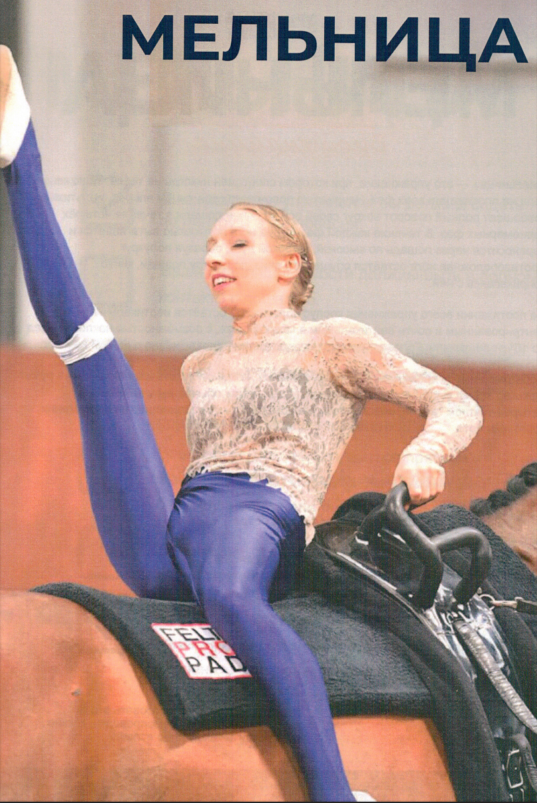
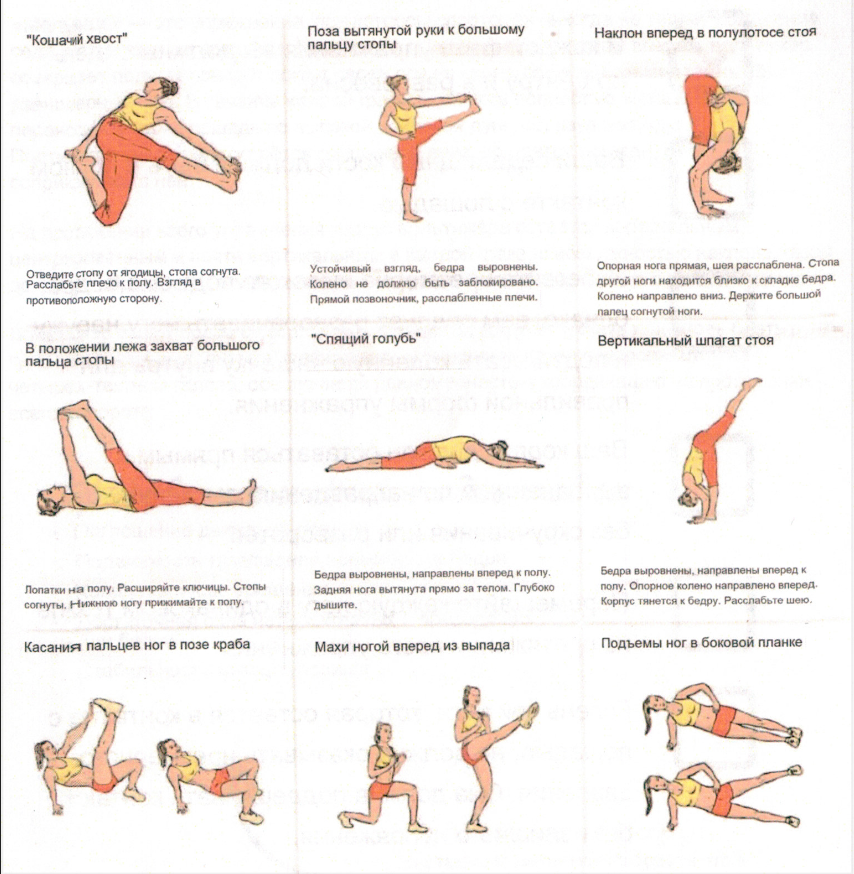

Нажмите на фото, чтобы увеличить
Вы также можете использовать это в качестве списка для самопроверки. Нужно ли улучшить какой-либо аспект?
«Мельница» - это упражнение, при котором спортсмен никогда не теряет положение седа на протяжении всех фаз. Начиная из положения седа лицом вперёд, вольтижёр совершает полный поворот вокруг своей оси на спине лошади в течение четырёх равномерных фаз.
В течение каждой фазы одна нога полностью вытягивается и переносится через лошадь по высокой, широкой дуге, образуя полукруг. Противоположная нога остаётся опущенной вниз, по центру лошади, мягко соприкасаясь с ней.
На протяжении всего упражнения корпус вольтижёра остаётся вертикальным, центрированным, с возможностью наклона назад до 10° от вертикали. Голова, плечи и таз вращаются одновременно с движением ног.
Вольтижёр имеет право самостоятельно решать, когда отпускать или вновь брать ручки гурты во время выполнения упражнения. «Мельница» обычно выполняется на четырёх-тактном галопе, обеспечивая равномерность и координацию на протяжении всего поворота.
